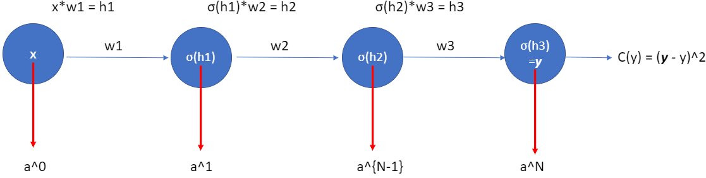
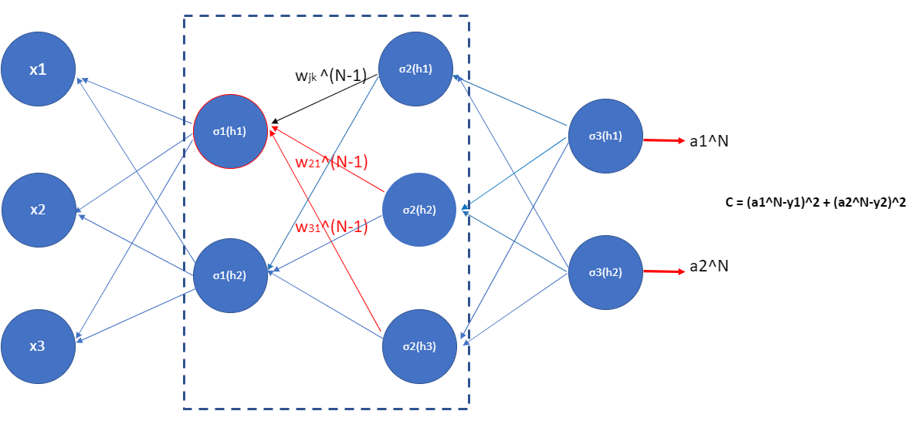

Chapter 10 – General Back Propagation¶
To better understand the general format, let’s have even one more layer…four layers (figure 1.14). So we have one input layer, two hidden layers and one output layer. To simplify the problem, we have only one neuron in each layer (one weight per layer, e.g. \(w_1\),\(w_2\),…), with \(b=0\). And \(C\) is some cost function. The output in the output layer,
\begin{equation} a^{(N)} = \boldsymbol{y} = \sigma(w^{(N)}*a^{(N-1)}) \end{equation} where \(N=3\) in this example of figure 1.14.
Therefore we have
\begin{equation} a^{(3)} = \boldsymbol{y} = \sigma(w^{(3)}*a^{(2)}) \end{equation} where \(a^{(2)} = \sigma(h_2)\), and it determines the cost function (simplified to \(C=(\boldsymbol{y}-y)^2\)). If the actual output \(\boldsymbol{y}\) from the network is close to the desired output \(y\), then the cost will be low, while if it’s far away, the cost will be high.
Also, let’s remember that we have used
\begin{equation} h^{(N)} = w^{(N)}*a^{(N-1)} \end{equation}
to make things simpler.
Note that I use \(w_n\) and \(w^{(N)}\) interchangeably, but they are the same in the single neuron net example. The notation of \(w^{(N)}\) is for a more complicated network we cover later. Anyway, let’s study the gradient \(\frac{\delta C}{\delta w_1}\) associated to the first hidden neuron. If we change the weight \(w_1\) by a tiny nudge \(\Delta w_1\). That will set off a cascading series of changes in the rest of the network. First, it causes a change \(\Delta a_1\) (\(a_1 = \sigma(h_1)\)) in the output from the first hidden neuron. That, in turn, will cause a change \(\Delta h_2\) in the weighted input to the second hidden neuron. Then a change \(\Delta a_2\) in the output from the second hidden neuron. And so on, all the way through to a change \(\Delta C\) in the cost at the output. We have
\begin{equation} \frac{\delta C}{\delta w_1} \approx \frac{\Delta C}{\Delta w_1} \end{equation}
This suggests that we can figure out an expression for the gradient \(\frac{\delta C}{\delta w_1}\) by carefully tracking the effect of each step in this cascade. To do this, let’s think about how \(\Delta w_1\) causes the output a1 from the first hidden neuron to change. We have \(a_1=\sigma(h1)=\sigma(w_1*x)\), so the change in \(a_1\)
\begin{equation} \Delta a_1 \approx \frac{\delta \sigma(h_1)}{\delta w_1} * \Delta w_1 =\frac{\delta \sigma(h_1)}{\delta h_1}\frac{\delta h_1}{\delta w_1}\Delta w_1 = \sigma^{‘}(h_1)x\Delta w_1 \end{equation}
That \(\sigma^{'}(h_1)\) term converts a change \(\Delta w_1\) in the weight into a change \(\Delta a_1\) in the output activation. That change \(\Delta a_1\) in turn causes a change in the weighted input \(h_2=w_2*a_1\) to the second hidden neuron:
\begin{equation} \Delta h_2 \approx \frac{\delta h_2}{\delta a_1} * \Delta a_1 = w_2*\Delta a_1 \end{equation}
Combining our expressions for \(\Delta h_2\) and \(\Delta a_1\), we see how the change in the weight \(w_1\) propagates along the network to affect \(h_2\):
\begin{equation} \Delta h_2 \approx w_2* \sigma^{‘}(h_1)x\Delta w_1 \end{equation}
This change in \(h_2\) can result in a change in \(a_2 = \sigma(h2)\):
\begin{equation} \Delta a_2 = \Delta \sigma(h_2) \approx \frac{\delta a_2}{h_2} * \Delta h_2 = \sigma^{‘}(h_2) * \Delta h_2 =\sigma^{‘}(h_2) * w_2* \sigma^{‘}(h_1)*\Delta w_1 \end{equation} which will cause a change in \(h_3\).
\begin{equation} \Delta h_3 \approx \frac{\delta h_3}{\delta a_2} * \Delta a_2 = w_3 * \Delta a_2 = w_3 * \sigma^{‘}(h_2) * w_2* \sigma^{‘}(h_1)x\Delta w_1 \end{equation}
This change in \(h_3\) will cause a change in \(\sigma(h_3)\), also known as \(\boldsymbol{y}\), the prediction result.
\begin{equation} \Delta \boldsymbol{y} = \Delta \sigma(h_3) \approx \frac{\delta y}{h_3} * \Delta h_3 =\sigma^{‘}(h_3) * \Delta h_3 = \sigma^{‘}(h_3) * w_3 * \sigma^{‘}(h_2) * w_2* \sigma^{‘}(h_1)x\Delta w_1 \end{equation}
This change in the prediction value \(\boldsymbol{y}\) will cause a change in the cost function, \(\Delta C\), making it bigger or smaller (of course we want it to be as small as possible).
\begin{equation} \Delta C \approx \frac{\delta C}{\delta \boldsymbol{y}} * \Delta \boldsymbol{y} = \frac{\delta C}{\delta \boldsymbol{y}}\sigma^{‘}(h_3) * w_3 * \sigma^{‘}(h_2) * w_2 \sigma^{‘}(h_1)x\Delta w_1 \label{deltaC} \end{equation}
We can keep going in this fashion, tracking the way changes propagate through the rest of the network, in theory to the \(n^{th}\) layer. After dividing \(\Delta w_1\) at the both sides in equation \ref{deltaC}, the resulting gradient for the \(w_1\) in this four layers network should be:
\begin{equation} \frac{\delta C}{\delta w_1} = x*\sigma^{‘}(h_1)w_2\sigma^{‘}(h_2)w_3\sigma^{‘}(h_3)*\frac{\delta C}{\delta \boldsymbol{y}} \label{dCdw1} \end{equation}
Or
\begin{equation} \frac{\delta C}{\delta w_1} = \frac{\delta h_1}{\delta w_1}\frac{\delta a^{(1)}}{\delta h_1}\frac{\delta h_2}{\delta a^{(1)}}\frac{\delta a^{(2)}}{\delta h_2}\frac{\delta h_3}{\delta a^{(2)}}\frac{\delta a^{(3)}}{\delta h_3}\frac{\delta C}{\delta a^{(3)}} \end{equation}
We should be reaffirming our idea of defining the `Error Term’ (by figure 1.15) for the efficiency of our code.
If we take a look at just the last two neurons – \(a^{(N-1)}\) and \(a^{(N)}\), then we have the following:
\begin{equation} \frac{\delta h_3}{\delta a^{(2)}}\frac{\delta a^{(3)}}{\delta h_3}\frac{\delta C}{\delta a^{(3)}} \end{equation}
which is investigating the amount of change of \(C\) due to a tiny nudge of \(a^{(2)}\).
This is helpful because now we can just keep iterating this chain rule idea backwards to see how sensitive the cost to the previous weights and biases.
This is just a little bit more complicated when we have more than one neuron in each layer because we have more indices to keep track of. Let’s take a look at the last two layers in a multiple neuron structure.

The change of \(h_1^{(3)}\) or \(h_2^{(3)}\) in the output layer will change the cost \(C\), and we define such gradient as \(\delta^{(N)}_j\):
\begin{equation} \frac{\delta C}{\delta h_1^{(3)}} = \delta^{(3)}_1 \end{equation}
and
\begin{equation} \frac{\delta C}{\delta h_2^{(3)}} = \delta^{(3)}_2 \end{equation}
or in general
\begin{equation} \frac{\delta C}{\delta h_j^{(N)}} = \delta^{(N)}_j = \frac{\delta C}{\delta a^{(N)}_j} \frac{a^{(N)}_j}{\delta h_j^{(N)}} = \frac{\delta C}{\delta a^{(N)}_j} \sigma^{‘}(h_j^{(N)}) \end{equation}
It’s easy to rewrite the equation in a matrix-based form, as
\begin{equation} \delta^{(N)} = \frac{\delta C}{\delta a^{(N)}}\odot \sigma^{‘}(h^{(N)}) \end{equation}
Then, the change in the \(h_j^{(N-1)}\) in the \(N-1\) layer will change \(a^{(N-1)}_j\) and then results in a change in \(a^{(N)}_j\), which will cause the change in the cost \(C\). In specific (red neuron in figure 1.16), we have
\begin{equation} \frac{\delta C}{\delta h_j^{(N-1)}} = \frac{\delta C}{\delta h_2^{(2)}} = \frac{\delta C}{\delta a^{(3)}_1} * \frac{\delta a^{(3)}_1}{\delta h_1^{(3)}} * \frac{\delta h_1^{(3)}}{\delta a^{(2)}_2}\frac{\delta a^{(2)}_2}{\delta h_2^{(2)}} + \frac{\delta C}{\delta a^{(3)}_2} * \frac{\delta a^{(3)}_2}{\delta h_2^{(3)}} * \frac{\delta h_2^{(3)}}{\delta a^{(2)}_2}\frac{\delta a^{(2)}_2}{\delta h_2^{(2)}} \label{dCdh22} \end{equation}
Similarly,
\begin{equation} \frac{\delta C}{\delta h_1^{(2)}} = \frac{\delta C}{\delta a^{(3)}_1} * \frac{\delta a^{(3)}_1}{\delta h_1^{(3)}} * \frac{\delta h_1^{(3)}}{\delta a^{(2)}_1}\frac{\delta a^{(2)}_1}{\delta h_1^{(2)}} + \frac{\delta C}{\delta a^{(3)}_2} * \frac{\delta a^{(3)}_2}{\delta h_2^{(3)}} * \frac{\delta h_2^{(3)}}{\delta a^{(2)}_1}\frac{\delta a^{(2)}_1}{\delta h_1^{(2)}} \label{dCdh12} \end{equation}
and
\begin{equation} \frac{\delta C}{\delta h_3^{(2)}} = \frac{\delta C}{\delta a^{(3)}_1} * \frac{\delta a^{(3)}_1}{\delta h_1^{(3)}} * \frac{\delta h_1^{(3)}}{\delta a^{(2)}_3}\frac{\delta a^{(2)}_3}{\delta h_3^{(2)}} + \frac{\delta C}{\delta a^{(3)}_2} * \frac{\delta a^{(3)}_2}{\delta h_2^{(3)}} * \frac{\delta h_2^{(3)}}{\delta a^{(2)}_3}\frac{\delta a^{(2)}_3}{\delta h_3^{(2)}} \label{dCdh32} \end{equation}

Now, we can define such gradient in equations \ref{dCdh22}, \ref{dCdh12} and \ref{dCdh32} by \(\delta^{(N-1)}\) in a vector form with \(\delta^{(N)}\) (shown in figure 1.17)
\begin{equation} \begin{bmatrix} \delta_1^{(2)}\delta_2^{(2)}\delta_3^{(2)}\end{bmatrix} = \begin{bmatrix} w^{(3)}{11} & w^{(3)}{21} \w^{(3)}{12} & w^{(3)}{23} \w^{(3)}{13} & w^{(3)}{23} \end{bmatrix} \cdot \begin{bmatrix} \delta_1^{(3)}\delta_2^{(3)}\end{bmatrix} \odot \begin{bmatrix} \sigma^{‘}(h_1^{(2)})\sigma^{‘}(h_2^{(2)})\sigma^{‘}(h_3^{(2)})\end{bmatrix} \end{equation}
This in general is the following
\begin{equation} \delta^{(N-1)} = w^{(N)} \cdot \delta^{(N)} \odot \sigma^{‘}_{h^{N-1}} \label{ErrorTermN_1_general} \end{equation} where \(\odot\) is the handamard or elementwise product.
We can keep going back (to the left) in the neural network to investigate how the change in \(\sigma_3^{N-2}\) (i.e. \(\sigma_3^{1}\)) can cause a change in \(C\).
For example, the change of neuron in red circle causes changes of three neurons in the second layer, and then they cause changes in the two neurons the output layer, which change the cost. We also need to consider the change of cost due to the second neuron (i.e. \(\sigma_1(h_2)\)). To express this in a general form:
\begin{equation} \begin{bmatrix} \delta_1^{(1)}\delta_2^{(1)}\end{bmatrix} = \begin{bmatrix} w^{(2)}{11} & w^{(2)}{21} & w^{(2)}{31} \w^{(2)}{12} & w^{(2)}{22} & w^{(2)}{32} \end{bmatrix} \cdot \begin{bmatrix} \delta_1^{(2)}\delta_2^{(2)}\delta_3^{(2)}\end{bmatrix} \odot \begin{bmatrix} \sigma^{‘}(h_1^{(1)})\sigma^{‘}(h_2^{(1)})\end{bmatrix} \label{dCdh_1} \end{equation}
So we have obtained the change of \(C\) with respect to \(h_i\) in the first layer. Now let us remember the actual goal here is to investigate how the change in weights caused the change in the cost. That’s right, it is the change of weights \(w\) that changes the \(h_i\). This connects with the expression in equation \ref{dCdh_1}: \(\frac{\delta C}{\delta h_i^{1}}\), which leads to the change of \(C\).

For example, since we know that
\begin{equation} h^{(1)}1=w{11}*x_1 + w_{12}*x_2 + w_{13}*x_3 \end{equation}
Then its derivative wrt. \(w_{11}\) (i.e. \(\frac{\delta h^{(1)}_1}{\delta w_{11}}\)) is just \(x_1\).
Therefore, we can use the chain rule to obtain the change of \(C\) due to the change of \(w_{11}\)
\begin{equation} \frac{\delta C}{\delta w_{11}}=\frac{\delta C}{\delta h_{1}^{(1)}}\frac{\delta h_{1}^{(1)}}{\delta w_{11}}=\delta_1^{(1)}*x_1 \end{equation}
Finally, we can update the weight by using the equation 20 in chapter 9.
Having understood backpropagation in the abstract, we can now understand the code used to implement backpropagation.
def backprop(self, x, y):
"""Return a tuple ``(nabla_b, nabla_w)`` representing the
gradient for the cost function C_x. ``nabla_b`` and
``nabla_w`` are layer-by-layer lists of numpy arrays, similar
to ``self.biases`` and ``self.weights``."""
nabla_b = [np.zeros(b.shape) for b in self.biases]
nabla_w = [np.zeros(w.shape) for w in self.weights]
# feedforward
activation = x
activations = [x] # list to store all the activations, layer by layer
zs = [] # list to store all the z vectors, layer by layer
for b, w in zip(self.biases, self.weights):
z = np.dot(w, activation)+b
zs.append(z)
activation = sigmoid(z)
activations.append(activation)
# backward pass
delta = self.cost_derivative(activations[-1], y) * \
sigmoid_prime(zs[-1])
nabla_b[-1] = delta
nabla_w[-1] = np.dot(delta, activations[-2].transpose())
# Note that the variable l in the loop below is used a little
# differently to the notation in Chapter 2 of the book. Here,
# l = 1 means the last layer of neurons, l = 2 is the
# second-last layer, and so on. It's a renumbering of the
# scheme in the book, used here to take advantage of the fact
# that Python can use negative indices in lists.
for l in xrange(2, self.num_layers):
z = zs[-l]
sp = sigmoid_prime(z)
delta = np.dot(self.weights[-l+1].transpose(), delta) * sp
nabla_b[-l] = delta
nabla_w[-l] = np.dot(delta, activations[-l-1].transpose())
return (nabla_b, nabla_w)
def sigmoid_prime(z):
"""Derivative of the sigmoid function."""
return sigmoid(z)*(1-sigmoid(z))